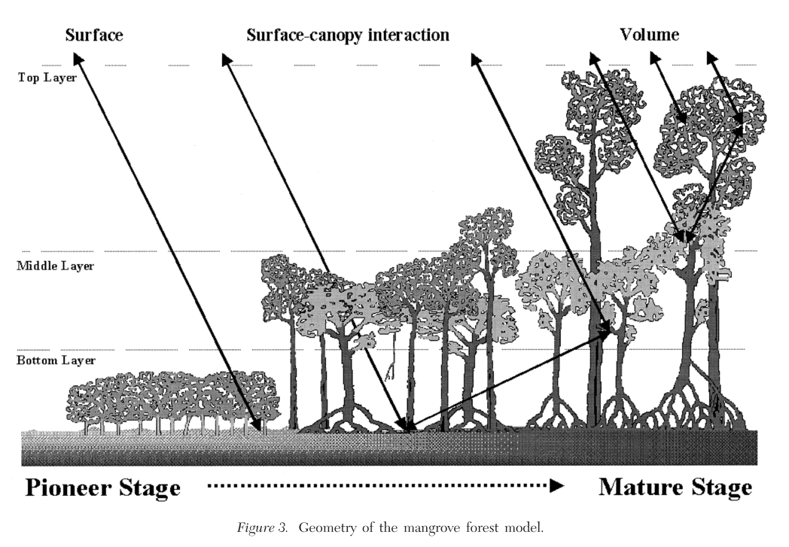
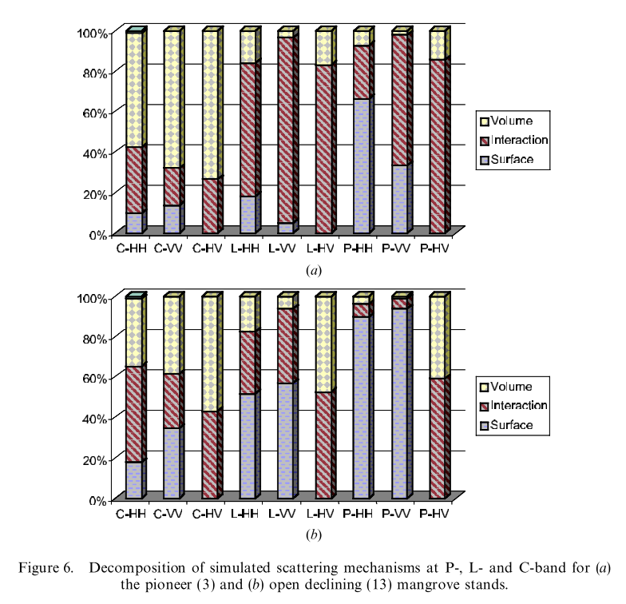

6.2 Vegetation
6.2.1 Ramsey, 1996
“Remote sensing of mangrove wetlands: Relating canopy spectra to site-specific data” (Ramsey and Jensen 1996)
Key significance: This is one of the earliest comprehensive attempts to relate multispectral wavelength data to mangrove forest structure characteristics. In particular, the study seeks out to answer two primary questions:
- What are the spectral and structural changes within and between mangrove species and community types?
- What are the relationships between the canopy spectral variability at the blue, green, red and NIR wavelength regions and canopy species composition and structural variability?
Their results largely showed that remote sensing of species composition is quite difficult (no relationships between species composition and spectral indices exist), but LAI and a few other parameters (canopy height) were found to be significantly correlated with some spectral bands/vegetation indices.
Research design: Field structure and species composition data was collected and coupled with remotely sensed spectral data. Regression and other statistical techniques were used to relate the data to the various spectral measures and their arithmetic transforms. Spectral measurements were taken in the lab, from a helicopter platform, and also from SPOT satellite.
Key notes & results: The following results and key conclusion of the study should be noted:
- LAI was calculated as a transform of canopy closure, which was collected with a hemispherical mirror
- Significant correlations of any of the bands with percent species composition was not significant
- The strongest correlations between spectral signatures and forest structure data was with LAI
- LAI was not significantly correlated with species composition, but was significantly correlated with forest height, which indicates that canopy depth expands with increasing canopy height.
6.2.2 Green, 1998
“Remote sensing techniques for mangrove mapping” (Green et al. 1998)
Key significance: The study reviews common methods of remote sensing for mangrove mapping, with a particular emphasis on the fact that accuracy assessments are rarely performed following classification of RS mangrove imagery. The authors then couple the most commonly used techniques with accuracy assessments using field-based data to examine the relative strengths & weaknesses of the different techniques.
Research design: The study employs three spectral image datasets (Landsat 6 TM, SPOT, and Airborne multispectral data at 1 m resolution) for generating of RS imagery of mangroves in the Turks and Caicos Islands. The review of classificatin of spectral imagery for mangroves identifies 5 different methodologies:
- Visual interpretation - the user classifies areas, though often with a radiometric enhancement applied to the imagery
- Vegetation index - different vegetation indices can be employed such as ratio indices (NDVI) or orthogonal indices (tasseled cap transformations); this study uses NDVI with a ISODATA clustering algorithm producing 50 classes that are identified and edited to match mangroves
- Unsupervised classification - may or may not involve image enhancement; this study used ISODATA clustering algo on unenhanced imagery
- Supervised classification - most common method of mangrove classification and may or may not include image enhancement (e.g., enhancing edges between stands or species types); this study uses 3 x 3 edge enhancement filter applied to imagery, useful in mangroves given linear nature
- PCA and band ratios - ratios of different bands can be effective in distinguishing different landscape features; this study uses the ratios of various Landsat and SPOT bands, runs PCA, and then generates an image based on the most significant PCAs (which they then classify)
Accuracy assessment was performed using three metrics (following Congalton, 1991):
- Overall accuracy - overall agreement as sum of correctly labelled sites divided by total number of sites
- User accuracy - probability that a classified pixel actually represents that category on the ground
- Producer accuracy - how often real features on ground are shown correctly on the map; NOT used in this study]
- Tau coefficient - indicates the percent of pixels classified correctly than would be expected by chance alone
Key results:
The authors largely justify the work based on:
- A lack of widespread accuracy assessments within the literature
- A discussion of the limitations of climate on spectral RS imagery classification (although their methods only examine spectral datasets; they give SAR a head nod in the review section)
Discrimination of mangrove vs. non-mangrove vegetation:
SPOT XS imagery was not effective at producing accurate classifications of mangrove extent. CASI (airborne) data was highly effective at identifying mangrove vegetation (with all five methods producing overall accuracies greater than 50%), whereas methods performed on Landsat data improved markedly with increased computational sophistication (i.e., method 5).
Accurate classification of Landsat data required the calculation of PCs and band ratios, rather than processing of just raw band data.
In general, visual identification and ratio index based classifications are not effective at classifying mangroves.
Additionally, merging of Landsat TM and SPOT XP (i.e., down-sampling Landsat data) was found to be effective at improving mapping classifications (using both a principle components merge, as well as an intensity-hue-saturation merge).
Discrimination of mangrove habitats:
The results show that the airborne spectral data (CASI) was most effective at accurately classifying 9 different mangrove classes. Reasonable classification accuracies could be achieved with the Landsat data for a reworking of just three mangrove classes (tall Rhizophora, other mangrove, and non-mangrove), but were highly inaccurate for a 9-class map.
Note: There is a nice table of other works on mangrove mapping and remote sensing in the introduction. It may be good to review this table again at a later date.
6.2.3 Proisy, 2000
“Interpretation of polarimetric radar signatures of mangrove forests” (Proisy et al. 2000)
Key contribution: This study reviews the interaction of backscattering signals of different polarizations of SAR data with components of a mangrove forest.
Research design: The study took field-based data on forest structure and species composition, as well as collected data from the P-, L-, and C-Bands of AIRSAR data (NASA JPL; airborne SAR). They calculated a number of backscattering coefficients for each of the polarizations (HH, VV and HV), as well as the copolarization ratio (VV/HH) as well as two cross-polarization ratios (HH/HV and VV/HV).
The different bands were acquired at a mean incidence angle of 35 degrees at:
- P-band: 0.44 GHz
- L-band: 1.25 GHz
- C-band: 5.3 GHz
Key findings:
Within the L-band, surface scattering or double-bounce effects dominate up until approximately 150-200 Mg/ha, whereas volume scattering (i.e., within the canopy) dominates for biomass values greater than 150-200 Mg/ha.
The dominant contributer to the backscattering coefficient depends on the type of forest being monitored. For example:
- Mature or declining stands with biomass greater than 300 Mg/ha have volume scatter at all frequencies.
- Mature or declining stands with biomass between 100 - 300 Mg/ha have dominant volume scattering at C-band, volume and double-bounce scattering at L-band, and double-bounce scattering at P-band
- Pioneer stages with less than 100 Mg/ha biomass have volume scattering present in all three polarizations of C-band, double-bounce or surface scattering at L-band, and all three present (though interaction term is strongest) at the L-band for all three polarizations.
Overall, P-band provides most pronounced polarimetric signatures, and is the most useful for distinguishing between different scattering mechanisms and thus different forest stages.
A nice summary figure of the interactions between forest structure and radar returns is below:

Notes: Prior studies have found that there is a strong positive relation between SAR backscattering coefficients and total biomass, particularly for P-HV and L-HV.
The main contributions to the total backscattering coefficient response are:
- the soil scattering component
- the volume scattering component
- the double-bounce scattering component
6.2.4 Proisy, 2002
“On the influence of canopy structure on radar backscattering in mangrove forests” (Proisy et al. 2002)
Key significance: One of a series of studies by Proisy et al, this particular study examines two mangrove forest stands of near identical aboveground biomass, but markedly different forest structure. They examine the polarimetric SAR data that they collect from the two plots, and examine them in relation to the two different forest structures.
The forest structures both contain ~75 Mg biomass/ha, but are structured as:
- A pioneer stand of L. racemosa that is extremely dense (~12,000 trees/ha) and has much higher basal area (21.0 m2/ha)
- A declining stand with two canopy strata:
- A. germinans that are dying off and form an open, tall canopy (250 trees/ha, 4.2 m2/ha & 19 m height)
- R. mangle that are replacing the A. germinans (31 trees/ha, 0.2 m2/ha & 8 m height)
Research design: The same research methods as (Proisy et al. 2000) (see Section 6.2.3) were employed, but this particular study focused on an in-depth comparison of two plots with similar aboveground biomass values, but markedly different forest structure characteristics.
Key results:
Overall, the backscattering from the open stand was higher than that of the closed (pioneer) stand.
With the help of a polarimetric scattering model, they found that the three primary contributers to backscattering (volume vs. interaction vs. surface scattering) differed between the two stands for select polarizations.
Additionally, they note two key concluding remarks:
- Use of correlation backscatter to biomass relationships should be restricted to homogeneous closed canopies.
- Distinguishing between stands of different developmental status should be possible via differences in backscaterring coefficients of the different SAR bands and polarizations
A key figure that shows some of these differences is shown below:

6.2.5 Mutanga, 2004
“Narrow band vegetation indices solve the saturation problem in biomass estimation” (Mutanga and Skidmore 2004)
Key significance: This study addresses the issue of vegetation index saturation at high biomass levels, and examines the effectiveness of hyperspectral data for resolving the issue.
The study is largely motivated given that the “major limitation of using vegetation indices is asymptotic approach of a saturation level after a certain biomass density or LAI”
Red edge - The rise of reflectance at the boundary between chlorophyll absorption in red wavelengths and leaf scattering in NIR wavelengths (680-750 nm).
Red edge position can be defined as the point of maximum slope on the red infrared curve, and can be calculated by identifying the maximum of the first derivative
Research design: The study primarily focuses on two approaches to resolving the saturation issue with biomass and vegetation indices:
- Use of narrow band vegetation indices, which are simply NDVI, Simple Ratio (SR) and Transformed Vegetation Index (TVI), but for 637 bands of hyperspectral data (350-2500 nm)
- Use of the red edge position
A grass was grown in a greenhouse with two different nitrogen treatments (and one control group), and hyperspectral signatures were repeatedly taken. The various indices are computed for narrow band vegetation indices as well as indices using the red edge position.
Key results:
NDVI - The results clearly indicate an improvement in a relationship between biomass and an NDVI index derived from red edge spectral bands rather than standard (NIR and red) bands.
SR - The results from the SR tests are similar to that of NDVI; reconstruction of SR using all possible hyperspectral band combinations indicates that bands from the red edge portion are most sensitive to changes in biomass
TVI - Although distribution of the R2 values for reconstruction of this index differed visually from that of NDVI and SR (which were quite similar), the most efficient TVI was found to be constructed from bands in the red edge portion of the spectrum.
The green portion of the spectrum also did well (e.g., second “best”) in reconstructing the vegetation indices.
Red edge position - The red edge position was found to have a high correlation coefficient with biomass, indicating there is a significant correlation
Of the three vegetation indices, SR was found to have the strongest correlation with biomass. Thus, narrow band derivations of SR from the red edge portion of the wavelength spectrum may be most efficient in estimating biomass from spectral data.
6.2.6 Wang, 2004a
“Comparison of IKONOS and QuickBird images for mapping mangrove species on the Caribbean coast of Panama” (Le Wang et al. 2004)
Key contribution: This study employs high resolution IKONOS (Space Imaging) and QuickBird (DigitalGlobe) imagery for improved mapping of mangrove species at Punta Galeta, Panama. In particular the study seeks to compare the imagery sources across three primary criteria:
- Spectral quality using subjective visual inspection and overall spectral statistics
- Classification effectiveness using multispectral bands with and without panchromatic bands
- Classification effectiveness following inclusion of textural information
Research design: IKONOS (4 m multi, 1 m pan) and QuickBird (2.8 m multispec, 0.7 m panchrom) imagery were bought for the region and geometrically corrected. Training and validation plots for the major land cover classes (red, white, and black mangroves, roads, lagoons, and rainforest) were established and data were collected.
MLC was used for classification of imagery using four multispectral bands, as well as a resampled panchromatic band at the resolution of the multispectral band resolution.
Additionally, spectral information using the high resolution data of the imagery were computed and included within the classification algorithms. Two “order” textural layers were derived:
- A first order layer that was a simple measure of local variance within different sized rectangular neighborhoods that were coupled with the multispectral bands.
- A second order layer that uses a gray-level co-occurrence matrix to derive three features: contrast, correlation and entropy (see Clausi, 2002)
Finally, an object-based approach was employed using the second order texture data. The image was segmented into objects, and then classification was applied to the resultant objects.
Key results: The results generally show that the high resolution multispectral datasets were effective in accurate classifications of mangrove species. In particular:
- Standard deviation and entropy of the multispectral data for IKONOS was consistently higher than that of QuickBird, indicating that IKONOS captures richer spectral information than QuickBird
- Classification using purely multispectral data was slightly better for IKONOS than QuickBird
- Addition of the panchromatic band did not significantly improve accuracies
- Inclusion of a first order texture band improved accuracies for the IKONOS image; HOWEVER, accuracies decreased for QuickBird imagery, with the exception of the largest window size
- Second order texture data did not produce accurate classifications by themselves
- Under the object-based approach (using textural information in panchromatic and multispectral bands), almost equivalent classification accuracies were achieved
It is important to note that the results do not support the expectation that the slightly higher spatial resolution of QuickBird imagery would result in “better” textural information for classification accuracies.
Further reading:
- Textural analyses:
- Clausi, 2002 - An analysis of co-occurrence texture statistics as a function of grey level quantization
- Haralick et al, 1973 - Textural features for image classification
6.2.7 Wang, 2004b
“Integration of object-based and pixel-based classification for mapping mangroves with IKONOS imagery” (L Wang, Sousa, and Gong 2004)
Key significance: This is a sister study to the study reviewed in Section @(wang2004a). This study sought to examine three different classification methods:
- MLC at the pixel level
- Nearest neighbor classification at the pixel level
- A hybrid classification that combines pixel and object based methods (MLCNN)
The consider the conundrum that with increasing spatial resolution, the number of detectable sub-class elements increases as well and thus classification at the pixel level may deteriorate. Thus, they examine object-based classification as a means of getting around this particular issue.
Research design: For the site and imagery description see Section @(wang2004a). The different classification approaches used in this study are described here:
- MLC at pixel level -
- Object-based classification - Used eCognition 3.0 software (region merging technique that uses a homogeneity criteria to detemine whether pixels and regions should be merged).
- The merging “breaks off” at a predetermined parameter (small param = small regions, large param = large regions), and there are in principle infinite choices of break-off parameters*
- The authors develop a joint procedure in which MLC at pixel level is first used, in which spectrally inseparable classes are identified, and all spectrally separable classes are masked out. An object-based classification procedure is then performed on the spectrally inseparable classes.
* To deal with the issue of infinate scale parameters, Wang et al develop a method to identify an optimal value. They use the training set data from the MLC image, reclassify all other pixels as 0s, and then use the image segmentation approach for several scale parameters. They then derive the pairwise Bhattacharya Distance values for the seven land cover classes at each scale, and select the scale at which BD reaches a maximum.
Key results: In general, the accuracy of the classifications were relatively high for all three methods; however, the mixed pixel and object-based method performed the best. The key results are:
- The pixel based approach generally did well in correctly classifying the land cover classes (88.9% overall accuracy), with the exception of the red mangroves (71.3% accuracy), black mangroves (81.8%) and rainforest (81%)
- The object-based approach improved classification of the rainforest (100%0), red mangroves (77.5%) and black mangroves (89.8%), but greatly misclassified white mangroves (21.9%) due to their existence along edges with red and black and thus being pulled into “objects”; overall accuracy was relatively lower relative to the pixel based approach as a result (80.4%)
- The mixed pixel and object-based method performed the best because white mangrove, road, gap and lagoon all were highly separable using MLC, but distinguishing between red mangrove, black mangrove and rainforest benefitted from the object-based method (due to high confusion between these classes)
- The mixed method approach achieved overall classification accuracies of 91.4%.
Key conclusions: The following conclusions are of particular note:
- The pixel-based method retains the spectral information at a fine spatial scale, but does not excel at distinguishing between spectrally similar classes (rainforest, red & black mangrove)
- The object-based method averages spectral information, but in doing so is able to improve discrimination between spectrally similar regions (the difficult classes mentioned above)
- However, you run the risk of averaging unrelated pixels (likely unavoidable)
6.2.8 Vaiphasa, 2005
“Tropical mangrove species discrimination using hyperspectral data: A laboratory study” (C. Vaiphasa et al. 2005)
Key contribution: At the time this study was written, hyperspectral studies of mangrove species classifications were relatively limited, and fairly inconclusive. This study soeeks to examine whether mangrove canopy leaves have sufficient spectral information to discriminate mangroves at the species level. Sixteen mangrove species were examined.
Research design: Canopy leaves from 16 species were collected in Chumphon and hyperspectral signatures at 2151 spectral bands from 400 - 2500 nm were collected in laboratory conditions.
One way ANOVA was used to examine for differences of individual species from one another across all spectral bands, and spectral separability of the species using a Jeffries-Matusita distance analysis metric. Given the issue of a massive feature space (2151 bands), four “optimal” bands for assessing spectral separability were identified using a wrapper feature selection approach.
Key results: The results generally show that discrimination between the sixteen species is generally achievable. Some particular key results include:
- 1941 of the 2151 bands were found to be spectrally dissimilar across all species (ANOVA analysis) at th p < 0.05 level. Of these 1941, 477 bands were significant at the < 0.01 level. The exceptions were primarily at the UV region (350-400 nm) and the shortwave infrared region (1800-2500 nm), where lighting conditions may have played an influential role.
- The optimal band combination for classification was found to be:
- 720 nm, 1277 nm, 1415 nm and 1644 nm
- These results indicate that other properties beyond pigment (which would correspond to the 720 nm band) may play important roles in discrimination, and may be a result of other ecophysiological factors (water content, salinity, sugar, protein, oil, lignin, cellulose, leaf structure, etc.)
- Pair-wise separability of mangrove species was possible for many of the species using these four bands and the J-M distance metric, but reduced separability was seen for species of the Rhizophoraceae family.
- There was high confusion both amongst species within Rhizophoraceae, as well as with S. ovata, X. granatum and Pluchea indica.
Further reading:
- Wayne and Le’s study of lab hyperspectral indices:
- Wang et al, 2009 - Distinguishing mangrove species with laboratory measurements of hyperspectral leaf reflectance
6.2.9 Vaiphasa, 2006
“A post-classifier for mangrove mapping using ecological data” (C. Vaiphasa, Skidmore, and Boer 2006)
Key contribution: This is one of the first studies to employ environmental data (pH) to refine classification maps of mangrove species. The study finds that classification accuracies are increased significantly, from 76.04% to 88.21%.
Research design: The study coupled an existing mangrove species map produced from classification of ASTER imagery with a map of pH throught Pak Panang mangroves to examine the effectiveness of a post-classifier. In particular, they collected 200 pH measurements distributed throughout the forest, 150 of which were used for interpolation of a salinity profile, and 50 of which were used for validation. They additionall collected species composition and forest structure data at >500 plots of 15 x 15 m2 in the forest, and used these for accuracy assessment of the maps.
The post-classifier was based on a Bayesian approach that employed probabilities of species given a pH level, and pH level given a species.
Key results: Accuracy of the mangrove species map was improved significantly with the addition of the pH data. In particular:
- Overall accuracy was improved from 76.04 - 88.21% following inclusion of pH data
- Speckling within the original mangrove species map was greatly reduced following inclusion of the pH layer
- Confusion between R. mucronata and S. caseolaris persisted despite the inclusion of the pH data
- In reference to the results from Vaiphasa (2005), they found that the addition of the pH data was able to improve the separability of species within the Rhizophoraceae family (which exhibited high confusion following classification of hyperspectral data)
The authors conclude that the method presented (classification followed by updating with ecological gradient data) may be an efficient means for producing detailed mangrove species maps in areas that are not too large (e.g., < 100 km2).
6.2.10 Wang, 2009
“Distinguishing mangrove species with laboratory measurements of hyperspectral leaf reflectance” (LE Wang and Sousa 2009)
Key contribution: Le and Wayne largely repeat the Vaiphasa, 2005 study (see Section 6.2.8) but for the three mangrove species common to central America. In addition, they examine the ability of hyperspectral data to estimate stress conditions in mangrove trees.
Research design: They collected leaves from all three species in both stressed and unstressed conditions, and also collected leaves from the top and bottom portions of the canopy. They then subjected each of the leaves to hyperspectral measurements in a laboratory setting before analyzing the data.
To reduce the feature space prior to spectral discrimination, they first used the ANOVA across all spectral bands to remove any bands that were non significant at the p < 0.01 level (a la Vaiphasa, 2005). They then use Linear Discriminate Analysis (LDA) to examine for differences amongst the species.
In addition, they use several indices of spectral bands identified by prior work as indices of leaf stress. Chlorophyl a and b contents drop dramatically in stressed leaves, greatly changing the reflectance properties of leaves. Studies have found that ratios are best in identifying stress characteristics, and they use these within ANOVA to compare means of ratios between stressed and unstressed leaves.
Key results: The results generally find that hyperspectral data is effective in species discrimination and also identification of stressed mangrove trees. Some particularly key results are as follows:
- 116 of the 215 bands were significant at the p < 0.01 level for distinguishing between species and were clustered in the 350-510 nm, 610-690 nm, 760-810 nm, 1370-1550 nm, and 1850-2500 nm ranges of the spectrum
- Red, white and black mangroves were capable of being discriminated using the hyperspectral data
- Use of the ratios for identifying stress in mangrove trees was effective, with different ratios performing better for different species (3/4 for red, 1/4 for white, and 4/4 for black)
- The specific band widths identified as significant in this study different from those of Vaiphasa, 2005
Key conclusions: Some key, broader-level conclusion from the study are as follows:
- Conventional challenges to analysing hyperspectral data are the large number of highly correlated bands available coupled with relatively smaller numbers of training and test samples.
- Wang and Sousa conclude that use of hyperspectral data is effective in overcoming the shortcomings of the multispectral datasets that they use in their 2004 sister studies.
6.2.11 Kamal, 2011
“Hyperspectral data for mangrove species mapping: A comparison of pixel-based and object-based approach” (Kamal and Phinn 2011)
Key contribution: This study employs high resolution, hyperspectral data to map mangroves and wetland land classes at a landscape scale in Australia using three different methods. There are relevant points they make but the study feels somewhat lacking in general.
Research design: CASI-2 hyperspectral data were used as the imagery (30 bands and 4 m spatial resolution) in this study.
An existing digital map of mangrove species produced via photographic interpretation of aerial imagery, site data, and traverses was used for endmembers selection and accuracy assessments of the classifications.
They use three different classification procedures to produce different maps of the landscape:
- Spectral angle mapper – uses a spectral library representative of different end members (i.e., the 9 targeted wetland classes) and assigns pixel to each based on a similarity measure
- Linear spectral unmixing – assumes each spectral signature is a linear combination of area weighted sum of reflectance of endmembers; total areas or pixels may then be assigned based on probabilistic basis
- Object-based mapping – used OBIA to segment the image before applying classification algorithms on the spectral signatures
Key results: Of the three methods examined, OBIA performed the best (overall classification accuracy of 76%). Linear spectral unmixing produced the lowest overall classification accuracy.
Conclusion: The classification accuracy is relatively lower than those found in other studies, and thus the results feel perhaps a bit short-sighted. Other metrics that could have been interesting to explore would have been texture given the high resolution nature of the dataset. Additionally, they do not dig into the hyperspectral bandwidths that are relevant, and thus there is valuable information that is missing from the study.
Additionally, it is not entirely clear to me whether they used the coarse level reference map for their accuracy assessment, or whether field data was collected. If the reference map is of low-quality, their results are rather meaningless.
6.2.12 Dronova, 2012
“Landscape analysis of wetland plant functional types: The effects of image segmentation scale, vegetation classes and classification methods” (Dronova et al. 2012)
Key contribution: This study examines the classification accuracy of plant functional types (PFTs) under different image segmentation scales and classification algorithms for Poyang Lake in China. The key results generally show that use of a coarser image scale (on average 5-8 Landsat pixels) significantly improved image classification of the different PFTs. Classification between the different algorithms were less significant.
Research design: Field data for training and test validation were collected, and Landsat 5 TM data (bands 1-5 & 7) were used for all image classification procedures. Image segmentation was performed at 9 different scales from (2 - 10), and six different classification algorithms were used:
- Bayesian
- Logistic
- Neural network
- Decision trees
- K-Nearest neighbors
- Support vector machines
The image classification procedure was performed under two scenarios, the first being for generalized PFTs (3 classes), and the second being for specific PFTs (6 classes). Water, sand and other development were excluded prior to classification. Cluster analysis was performed on morphological and physiological data of the 51 species within the landscape to identify the different classes.
Additionally, texture metrics within objects were computed and included in the classification procedure to examine their utility.
Key results: The results found that OBIA generally improved the results of the classification for both the 3-class and 6-class sets Some specific results include:
- A scale of 8 was found to produce the highest classification accuracies for both classification sets (i.e., objects of 5-8 Landsat pixels)
- However, at the specific PFT level, the optimal scale parameter was found to be variable
- Texture metrics were not found to significantly improve classification accuracies, indicating that discrimination between the various classes was primarily spectrally based
- Overall classification accuracy was relatively similar for the different classification algorithms
The authors conclude that smoothing of spectral signatures within objects lends to greater discrimination between PFTs, aiding in overall classification.
Texture metrics may have proven to be insignificant in improving classification accuracies due to the relatively coarse nature of the Landsat data. Most other studies that have found texture to be significant have used high resolution imagery.
Human interference and ecological conditions that produced mixed pixels resulted in reduced classification accuracy, and the authors conclude that mixed approaches (i.e., object-based followed by pixel-based, a la (L Wang, Sousa, and Gong 2004)) may be an interesting means of resolving this issue. However, propagation of uncertainty has been under-explored and will be important in such scenarios.
Placeholder
Ramsey, Elijah W, and John R Jensen. 1996. “Remote Sensing of Mangrove Wetlands: Relating Canopy Spectra to Site-Specific Data.” Photogrammetric Engineering and Remote Sensing 62 (8): 939–48.
Green, Edmund P, Christopher D Clark, Peter J Mumby, Alasdair J Edwards, and AC Ellis. 1998. “Remote Sensing Techniques for Mangrove Mapping.” International Journal of Remote Sensing 19 (5): 935–56. doi:10.1080/014311698215801.
Proisy, C, E Mougin, F Fromard, and MA Karam. 2000. “Interpretation of Polarimetric Radar Signatures of Mangrove Forests.” Remote Sensing of Environment 71 (1): 56–66. doi:10.1016/S0034-4257(99)00064-4.
Proisy, C, E Mougin, F Fromard, V Trichon, and MA Karam. 2002. “On the Influence of Canopy Structure on the Radar Backscattering of Mangrove Forests.” International Journal of Remote Sensing 23 (20): 4197–4210. doi:10.1080/01431160110107725.
Mutanga, Onisimo, and Andrew K Skidmore. 2004. “Narrow Band Vegetation Indices Overcome the Saturation Problem in Biomass Estimation.” International Journal of Remote Sensing 25 (19): 3999–4014. doi:10.1080/01431160310001654923.
Wang, Le, Wayne P Sousa, Peng Gong, and Gregory S Biging. 2004. “Comparison of Ikonos and Quickbird Images for Mapping Mangrove Species on the Caribbean Coast of Panama.” Remote Sensing of Environment 91 (3): 432–40. doi:10.1016/j.rse.2004.04.005.
Wang, L, WP Sousa, and P Gong. 2004. “Integration of Object-Based and Pixel-Based Classification for Mapping Mangroves with Ikonos Imagery.” International Journal of Remote Sensing 25 (24): 5655–68. doi:10.1080/014311602331291215.
Vaiphasa, Chaichoke, Suwit Ongsomwang, Tanasak Vaiphasa, and Andrew K Skidmore. 2005. “Tropical Mangrove Species Discrimination Using Hyperspectral Data: A Laboratory Study.” Estuarine, Coastal and Shelf Science 65 (1): 371–79. doi:10.1016/j.ecss.2005.06.014.
Vaiphasa, Chaichoke, Andrew K Skidmore, and Willem F de Boer. 2006. “A Post-Classifier for Mangrove Mapping Using Ecological Data.” ISPRS Journal of Photogrammetry and Remote Sensing 61 (1): 1–10. doi:10.1016/j.isprsjprs.2006.05.005.
Wang, LE, and Wayne P Sousa. 2009. “Distinguishing Mangrove Species with Laboratory Measurements of Hyperspectral Leaf Reflectance.” International Journal of Remote Sensing 30 (5): 1267–81. doi:10.1080/01431160802474014.
Kamal, Muhammad, and Stuart Phinn. 2011. “Hyperspectral Data for Mangrove Species Mapping: A Comparison of Pixel-Based and Object-Based Approach.” Remote Sensing 3 (10): 2222–42. doi:10.3390/rs3102222.
Dronova, Iryna, Peng Gong, Nicholas E Clinton, Lin Wang, Wei Fu, Shuhua Qi, and Ying Liu. 2012. “Landscape Analysis of Wetland Plant Functional Types: The Effects of Image Segmentation Scale, Vegetation Classes and Classification Methods.” Remote Sensing of Environment 127: 357–69. doi:10.1016/j.rse.2012.09.018.